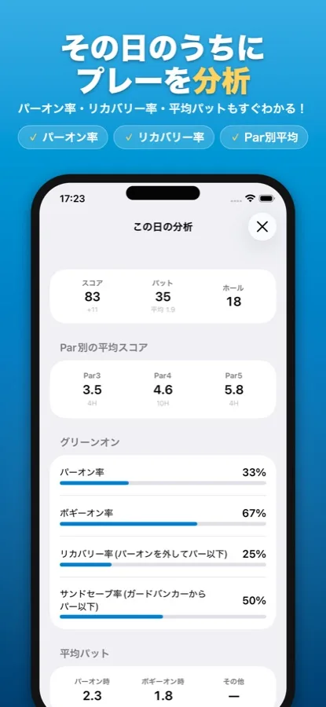

パーオンとは｜意味と、パーオン率のスコア別の目安
SQORE編集部 ｜ 2026年11月3日更新
パーオンとは、パーより2打少ない打数までにグリーンに乗せることです。パー3なら1打目、パー4なら2打目、パー5なら3打目。そこから2パットで上がればパーになります。パーオン率の目安は80台で2.5〜4割、90台で1.5〜2.5割。この記事では数え方と、スコア別に18ホールのうち何ホール乗っているのかを分解して見ていきます。
パーオンとは
「パーより2打少ない打数までにグリーンに乗る」ことをパーオンと言います。英語ではGIR（Greens in Regulation）です。
- 早く乗るぶんにはパーオン — パー5の2オン、パー4のワンオンもパーオンに数えます。
- カラー（エッジ）は含まない — 本来はグリーン面に乗った場合だけです。
- パーオンしてもパーとは限らない — 3パットすればボギー。逆に乗らなくても寄せて1パットならパーです（リカバリー）。
パーオン率の目安
| レベル | パーオン率の目安 | 18ホール中（ホール数） |
|---|---|---|
| プロ（上位） | 7割前後 | 約13 |
| プロ（100位前後） | 5割強 | 約9 |
| シングル・70台 | 4〜5割 | 7〜9 |
| 80台 | 2.5〜4割 | 4〜7 |
| 90台 | 1.5〜2.5割 | 3〜4 |
| 100前後 | 1〜2割 | 2〜4 |
この数字は媒体によってばらつきがあります（「1〜2割」「10〜20%」「20%弱」など）。統一された調査があるわけではないので、目安として捉えてください。
80・90・100は、18ホールの中身がどう違うのか
スコアは「グリーンに乗るまでの打数」と「パット数」の足し算です。パー72のコースなら、全ホールでパーオンしたときの「乗るまでの打数」は36打。そこから何打遅れて乗ったかと、パット数で合計が決まります。上の目安に収まる内訳の一例を、実際に足し算してみました。
| 18ホールの内訳（一例・ホール数） | 80 | 90 | 100 |
|---|---|---|---|
| パーオン（遅れ0打） | 7 | 3 | 2 |
| ボギーオン（遅れ1打） | 9 | 8 | 6 |
| 2打遅れでオン | 2 | 7 | 8 |
| 3打遅れでオン | 0 | 0 | 2 |
| 乗るまでの打数 | 49打 36＋13 | 58打 36＋22 | 64打 36＋28 |
| パット数 | 31 | 32 | 36 |
| 合計 | 80 | 90 | 100 |
足し算にすると、パーオン1回で減るのはボギーオンと比べて1打だけだと分かります。90から80へ10打縮めたこの例でも、パーオンが3→7ホールに増えて減ったのは4打。残りの6打は、2打遅れのホールを7→2に減らしたこと（5打）とパット（1打）から来ています。
100から90の例ではさらにはっきりしていて、パーオンは2→3ホールで1打ぶんだけ。大きく遅れるホールを減らし（5打）、パットを4つ減らしたことのほうが効いています。
90台までは、パーオンの回数を増やすより「大きく遅れて乗るホール」を減らすほうが近道です。100前後の人がパーオン率より先にボギーオン率を見るべきと言われるのは、このためです。
パーオン率と一緒に見る数字
| 指標 | 意味 | 分かること |
|---|---|---|
| パーオン時の平均パット | パーオンしたホールだけの平均パット数 | 2を超えるなら、乗ってはいるがピンから遠い（アイアンの距離感） |
| リカバリー率 | パーオンを外したホールのうち、パー以下で上がれた割合 | 寄せとパットでどれだけ取り返せているか |
| ボギーオン率 | パーより1打多くグリーンに乗った割合 | 大きく遅れずに乗せられているか |
SQOREでの見方
記録しておけば、全部自動で出る
iPhone・AndroidアプリのSQOREは、ラウンド中にパット数と詳細（ティーショットの方向・OB・ガードバンカーなど）を入れておくと、パーオン率・ボギーオン率・リカバリー率・サンドセーブ率を自動で計算します。平均パットもパーオン時とボギーオン時に分けて出ます。
パーオンは「打数 − パット数 ≦ パー − 2」で判定します。パット数を入れたホールだけが対象です。

よくある質問
パーオンとは？
パーより2打少ない打数までにグリーンに乗せることです。パー3なら1打目、パー4なら2打目、パー5なら3打目までに乗ればパーオン。そこから2パットで上がればパーになります。
パーオン率の目安は？
80台で2.5〜4割（18ホール中4〜7ホール）、90台で1.5〜2.5割（3〜4ホール）、100前後で1〜2割（2〜4ホール）がよく言われる目安です。統一された調査はないので、媒体によって数字に幅があります。
パー5の2オンもパーオン？
パーオンです。パーオンは「パーより2打少ない打数まで」に乗ればよいので、パー5なら2打目で乗っても3打目で乗っても数えます。パー4のワンオンも同じです。
カラー（エッジ）に止まったらパーオン？
本来のパーオンはグリーン面に乗った場合だけで、カラーは含みません。ただ打数とパット数から数える場合、カラーからのパターをパットに数えるとパーオンとして計算されます。自分の中でどちらかに決めておけば、数字の比べ方はぶれません。
パーオン率はどうやって数える？
各ホールで「打数 − パット数」を出し、それがパーより2以上少なければパーオンです。パー4なら打数−パットが2以下。パット数を入れていないホールは数えられないので、パット数を記録できるアプリに任せるのが楽です。
この記事の検証方法
パーオン率の目安は、ゴルフ雑誌・ゴルフメディアでよく使われる数字の幅をまとめたものです（統一された調査はありません）。「18ホールの内訳」の表は、その目安の範囲に収まるよう組んだ一例で、各列の打数は実際に足し算して80・90・100になることを確かめています。SQOREのパーオンの判定は、アプリの実装と同じ「打数 − パット数 ≦ パー − 2」です。
記録するだけで、プレーが分析される
SQOREはスコアと詳細を入れるだけで、パーオン率・ボギーオン率・リカバリー率まで自動で出す無料アプリです。